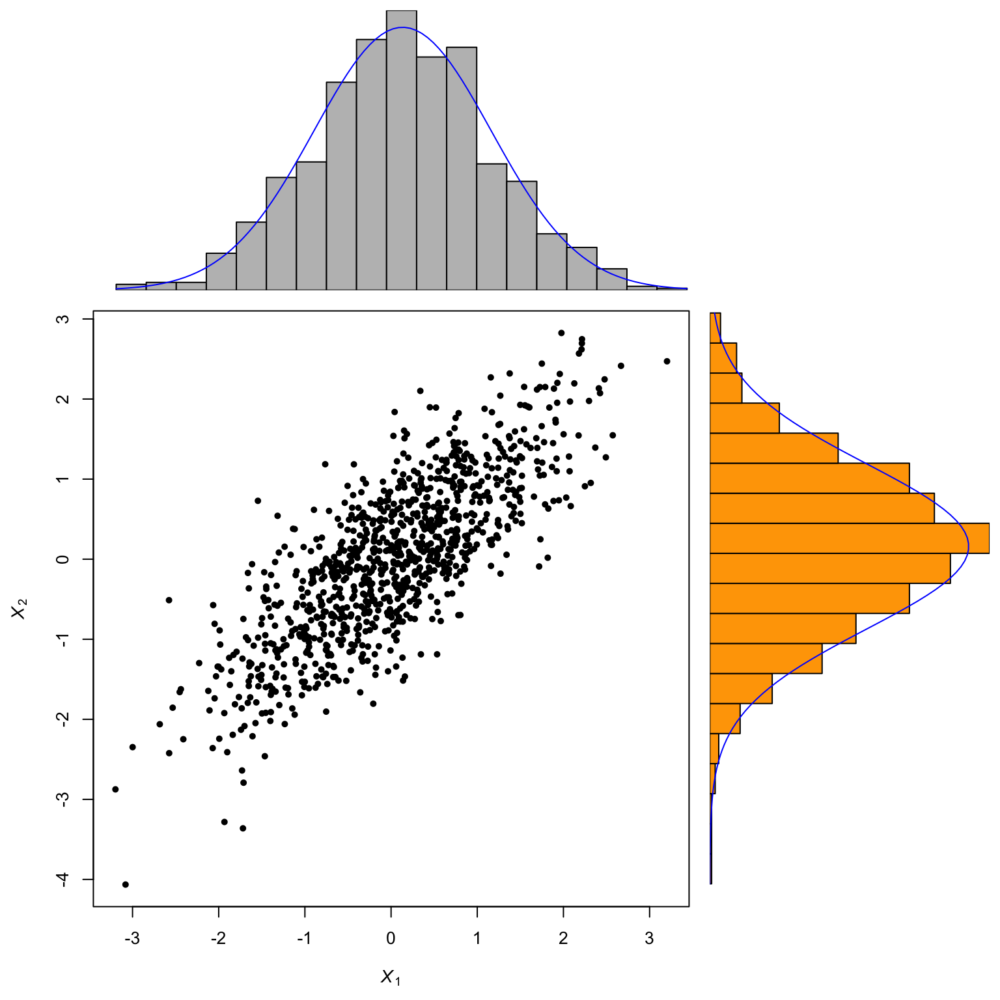

Plotting using ggplot2 and plotly in R (Python = matplotlib, seaborn, plotnine, plotly)
Robert Settlage
2022-09-20
Last updated: 2022-09-21
Checks: 5 2
Knit directory:
~/Projects/STAT5014_Fall2022/
This reproducible R Markdown analysis was created with workflowr (version 1.7.0). The Checks tab describes the reproducibility checks that were applied when the results were created. The Past versions tab lists the development history.
The R Markdown file has unstaged changes. To know which version of
the R Markdown file created these results, you’ll want to first commit
it to the Git repo. If you’re still working on the analysis, you can
ignore this warning. When you’re finished, you can run
wflow_publish to commit the R Markdown file and build the
HTML.
Great job! The global environment was empty. Objects defined in the global environment can affect the analysis in your R Markdown file in unknown ways. For reproduciblity it’s best to always run the code in an empty environment.
The command set.seed(20210816) was run prior to running
the code in the R Markdown file. Setting a seed ensures that any results
that rely on randomness, e.g. subsampling or permutations, are
reproducible.
Great job! Recording the operating system, R version, and package versions is critical for reproducibility.
Nice! There were no cached chunks for this analysis, so you can be confident that you successfully produced the results during this run.
Using absolute paths to the files within your workflowr project makes it difficult for you and others to run your code on a different machine. Change the absolute path(s) below to the suggested relative path(s) to make your code more reproducible.
| absolute | relative |
|---|---|
| /Users/rsettlag/Projects/STAT5014_Fall2022 | . |
Great! You are using Git for version control. Tracking code development and connecting the code version to the results is critical for reproducibility.
The results in this page were generated with repository version 1d69b96. See the Past versions tab to see a history of the changes made to the R Markdown and HTML files.
Note that you need to be careful to ensure that all relevant files for
the analysis have been committed to Git prior to generating the results
(you can use wflow_publish or
wflow_git_commit). workflowr only checks the R Markdown
file, but you know if there are other scripts or data files that it
depends on. Below is the status of the Git repository when the results
were generated:
Ignored files:
Ignored: analysis/.Rhistory
Ignored: analysis/Week_2_Reproducible_research_Git_Good_Programming_Practices_cache/
Untracked files:
Untracked: figure/Week_4_Plots_using_ggplot2_plotly_more.Rmd/
Untracked: figure/seaborn_pairplot.jpg
Untracked: figure/seaborn_pairplot.png
Unstaged changes:
Modified: analysis/Week_4_Plots_using_ggplot2_plotly_more.Rmd
Note that any generated files, e.g. HTML, png, CSS, etc., are not included in this status report because it is ok for generated content to have uncommitted changes.
These are the previous versions of the repository in which changes were
made to the R Markdown
(analysis/Week_4_Plots_using_ggplot2_plotly_more.Rmd) and
HTML (docs/Week_4_Plots_using_ggplot2_plotly_more.html)
files. If you’ve configured a remote Git repository (see
?wflow_git_remote), click on the hyperlinks in the table
below to view the files as they were in that past version.
| File | Version | Author | Date | Message |
|---|---|---|---|---|
| Rmd | 1d69b96 | Robert Settlage | 2022-09-20 | quick backup - battery issue |
| Rmd | 54e78fb | rsettlag | 2022-09-20 | stub out Week 4 |
Today’s Agenda
- Review and extend Git by adding branch, pull origin main
- ggplot2
- plotly
- Python variants matplotlib, seaborn, plotnine, plotly
Extending Git by using git branch
Git is essentially a database of snapshots of the project directory tree.
The basic workflow is:
- git pull
- do work
- git pull to make sure you have latest files
- git add <your changed file> tells
git what change you care about
- git commit -m “some INFORMATIVE message about the
changes”
- git push to the repository (local or remote)
- repeat
Now lets add a branch – DONT change the main branch readme at home
git branch mynewstuff
# don't do this next line at home ;)
## echo "\nadd a new line or two\n" >>README.md
cat README.md
git switch mynewstuff
cat README.mdWhat happened? How do we fix it?
git pull
git pull
git pull origin main
cat README.mdWhy is this cool?
Hint:
Remeber this nice visual from Git-flow https://jeffkreeftmeijer.com/git-flow/
| Version | Author | Date |
|---|---|---|
| c957dab | rsettlag | 2022-08-31 |
Plot inspiration
Switching gears, visualizing our data.
Two stages of data viz:
- EDA
- Publication/Reporting
http://www.r-graph-gallery.com
https://flowingdata.com/2016/03/22/comparing-ggplot2-and-r-base-graphics/
https://simplystatistics.org/2016/02/11/why-i-dont-use-ggplot2/
http://varianceexplained.org/r/why-I-use-ggplot2/
Julia
http://docs.juliaplots.org/latest/
Elements of a good figure | EDA stage
- simple to create
- shows only what you need it to
- doesn’t take a lot of explaination
- YOU are the primary audience (at first)
- has enough detail to give insight
Elements of a good figure | Publication stage
- ok, wow factor
- shows only what you need it to
- draws the reader in
- invokes inquiry
- is fully self contained with legend AND caption
- simple is GENERALLY better (meaning less factors in play)
- all these rules are out the window for art
General good advice:
http://jaoa.org/article.aspx?articleid=2094515
Figure caption specifics:
https://www.physics.ohio-state.edu/~wilkins/writing/Handouts/fig-captions.html
How to lie with charts:
https://flowingdata.com/2017/02/09/how-to-spot-visualization-lies/
Elements of a good figure | specifics
https://flowingdata.com/2010/07/22/7-basic-rules-for-making-charts-and-graphs/
- EDA stage, stay simple and investigate oddities
- outliers, typos, interesting features
- outliers, typos, interesting features
- make a legend if needed (ie you used colors, shapes, etc for a factor)
- label axes
- include units
- keep geometry in check
- area of circle or square, size of bubble
- always include sources
- keep your audience in mind
“To put it simply: tell your story clearly and communicate the data accurately.”

Reading order
Multipanel plots
I personally find these the most rewarding, but most time consuming plots. I often end up doing them in base R because -I- find the layout easier for me to understand.
Consider a Base R 3 panel plot showing density of a scatter plot in the margins.

| Version | Author | Date |
|---|---|---|
| c957dab | rsettlag | 2022-08-31 |
Multipanel base plot
How do we get to the above? – We manipulate the canvas.
This site has everything needed to make fantastic plots using base functions:
Multipanel base plot example
https://r-charts.com/base-r/combining-plots/
# Data
set.seed(6)
x <- rexp(50)
layout(matrix(c(2, 0, 1, 3), nrow = 2, ncol = 2, byrow = TRUE),
widths = c(3, 1),
heights = c(1, 3), respect = TRUE)
# Top and right margin of the main plot
par(mar = c(5.1, 4.1, 0, 0))
plot(x, cex=2, pch=20)
# Left margin of the histogram
par(mar = c(0, 4.1, 0, 0))
hist(x, main = "", bty = "n", axes = FALSE, ylab = "")
# Bottom margin of the boxplot
par(mar = c(5.1, 0, 0, 0))
# Boxplot without plot region box
par(bty = "n")
# Boxplot without axes
boxplot(x, axes = FALSE)
Margins are the key
https://www.r-graph-gallery.com/74-margin-and-oma-cheatsheet.html
# Margins area
par(oma=c(3,3,3,3)) # all sides have 3 lines of space
par(mar=c(5,4,4,2) + 0.1)
# Plot
plot(0:10, 0:10, type="n", xlab="X", ylab="Y") # type="n" hides the points
# Place text in the plot and color everything plot-related red
text(5,5, "Plot", col="red", cex=2)
box(col="red")
# Place text in the margins and label the margins, all in forestgreen
mtext("Margins", side=3, line=2, cex=2, col="forestgreen")
mtext("par(mar=c(b,l,t,r))", side=3, line=1, cex=1, col="forestgreen")
mtext("Line 0", side=3, line=0, adj=1.0, cex=1, col="forestgreen")
mtext("Line 1", side=3, line=1, adj=1.0, cex=1, col="forestgreen")
mtext("Line 2", side=3, line=2, adj=1.0, cex=1, col="forestgreen")
mtext("Line 3", side=3, line=3, adj=1.0, cex=1, col="forestgreen")
box("figure", col="forestgreen")
# Label the outer margin area and color it blue
# Note the 'outer=TRUE' command moves us from the figure margins to the outer margins.
mtext("Outer Margin Area", side=1, line=1, cex=2, col="blue", outer=TRUE)
mtext("par(oma=c(b,l,t,r))", side=1, line=2, cex=1, col="blue", outer=TRUE)
mtext("Line 0", side=1, line=0, adj=0.0, cex=1, col="blue", outer=TRUE)
mtext("Line 1", side=1, line=1, adj=0.0, cex=1, col="blue", outer=TRUE)
mtext("Line 2", side=1, line=2, adj=0.0, cex=1, col="blue", outer=TRUE)
box("outer", col="blue") 
ggplot2
Another Hadley Wickam creation. Lot’s of love/hate for it. I mostly like it. I find a few types of plots are SUPER simple via ggplot2 that might be very time consuming in base graphics. I also find that I spend more time in customizing away the ggplot look if I am trying to make a figure for a pub.
The basic idea is that creating figures is a step wise process of building a plot.
- you need data
- you need a mapping of data to the plot features
- you need a graphical object
You mix these and wallah!! Additionally, some basic sensible formatting defaults are set.
Examples
Let’s look at:
- factors
- fill
- color
- facet_wrap
- smooth
library(ggplot2)
penguins %>%
filter(!is.na(sex)) %>%
select(sex,body_mass_g, species) %>%
ggplot(aes(x=sex, y=body_mass_g)) +
geom_col(aes(fill=sex)) +
facet_wrap(~ species)peng <- penguins %>%
filter(!is.na(sex)) %>%
select(sex,body_mass_g, species, flipper_length_mm) %>%
##group_by(species, sex) %>%
ggplot(aes(x=flipper_length_mm, y=body_mass_g, color=species)) +
geom_point() +
geom_smooth(method="lm", se=FALSE) +
facet_wrap(~ sex) +
theme(axis.text.x = element_text(angle=45,hjust=1))
peng`geom_smooth()` using formula 'y ~ x'ggplotly(peng +
tidyquant::theme_tq() +
theme(axis.text.x = element_text(angle=45,hjust=1)) +
labs(x = ""))Registered S3 method overwritten by 'quantmod':
method from
as.zoo.data.frame zoo `geom_smooth()` using formula 'y ~ x'fig <- penguins %>%
select(-year) %>%
filter(!is.na(sex)) %>%
plot_ly(x = ~ bill_length_mm, y = ~ bill_depth_mm,
type = 'scatter', mode = 'markers', split = ~species)
figPython time
IMO, there are really two ways to use python in Rstudio, both using the Reticulate package. We can:
- jump into a Python kernel and do what we want using native Python
commands
- stay in R and use Python through R
Setup Reticulate, Python and Conda env:
# install.packages("reticulate")
## from terminal -- could do this via reticulate functions as in:
## https://rstudio.github.io/reticulate/articles/python_packages.html
# conda create -n stat5014
# conda activate stat5014
# conda install matplotlib seaborn pandas numpy plotnine plotly
# pip install palmerpenguins # <- could also use reticulate to pass penguin data from R->python
library(reticulate)
use_condaenv("stat5014")
#importing required Python libraries/modules
sns <- import('seaborn')
plt <- import('matplotlib.pyplot')
pd <- import('pandas')import matplotlib.pyplot as plt
import pandas as pd
from palmerpenguins import load_penguins
penguins = load_penguins()
plt.figure(figsize=(17,10))
plt.scatter(penguins['bill_length_mm'], penguins['bill_depth_mm'], c=penguins['body_mass_g'],alpha=0.7,cmap = 'gnuplot2')
#plt.title('Weight vs Height with color gradient representing Brozek',fontsize=25)
#plt.xlabel('Weight', fontsize=20)
#plt.ylabel('Height', fontsize=20)
plt.grid(True)
cb= plt.colorbar()
cb.set_label('bodymass', fontsize=20)
#plt.show()
plt.savefig('./docs/figure/matplotlib_test.jpg')matplotlib
#building a seaborn pairplot using pairplot()
s <- sns$pairplot(r_to_py(penguins), hue = 'species')
#display the plot
#plt$show()
plt$savefig('./docs/figure/seaborn_pairplot.jpg')pairplot
Plotnine giving me problems atm, fix later.
# https://stackoverflow.com/questions/65487862/creating-plot-using-plotnine-of-python-from-r-through-reticulate
pd = import('pandas',convert=F)
p9 = import('plotnine')
# new imports
patsy = import('patsy')
# import to be able to show in RStudio (see issue here: https://github.com/rstudio/rstudio/issues/4978)
matplotlib = import('matplotlib')
matplotlib$use('tkAgg')
plt = import('matplotlib.pyplot')
peng_py <- r_to_py(penguins,convert=FALSE)
peng_pd <- pd$DataFrame(data=peng_py)
plot_py = p9$ggplot(mpg_pd,p9$aes(x='displ',y='cty'),
# new code (-1 was the only value that didn't throw an error)
environment = patsy$EvalEnvironment$capture(eval_env=as.integer(-1)))
print(class(plot_py)) # "plotnine.ggplot.ggplot" "python.builtin.object"
# Actually show the plot
plot_py
plt$show()will adapt later
import seaborn as sns
import pandas as pd
from palmerpenguins import load_penguins
penguins = load_penguins()
penguins.head()
g = sns.lmplot(x="flipper_length_mm",
y="body_mass_g",
hue="species",
height=7,
data=penguins,
palette=['#FF8C00','#159090','#A034F0'])
g.set_xlabels('Flipper Length')
g.set_ylabels('Body Mass')
plot.show()
sessionInfo()R version 4.2.1 (2022-06-23)
Platform: aarch64-apple-darwin20 (64-bit)
Running under: macOS Monterey 12.4
Matrix products: default
BLAS: /Library/Frameworks/R.framework/Versions/4.2-arm64/Resources/lib/libRblas.0.dylib
LAPACK: /Library/Frameworks/R.framework/Versions/4.2-arm64/Resources/lib/libRlapack.dylib
locale:
[1] en_US.UTF-8/en_US.UTF-8/en_US.UTF-8/C/en_US.UTF-8/en_US.UTF-8
attached base packages:
[1] stats graphics grDevices utils datasets methods base
other attached packages:
[1] reticulate_1.26 plotly_4.10.0 forcats_0.5.2
[4] stringr_1.4.1 dplyr_1.0.10 purrr_0.3.4
[7] readr_2.1.2 tidyr_1.2.1 tibble_3.1.8
[10] ggplot2_3.3.6 tidyverse_1.3.2 palmerpenguins_0.1.1
loaded via a namespace (and not attached):
[1] nlme_3.1-159 fs_1.5.2
[3] xts_0.12.1 lubridate_1.8.0
[5] httr_1.4.4 rprojroot_2.0.3
[7] tools_4.2.1 backports_1.4.1
[9] bslib_0.4.0 utf8_1.2.2
[11] R6_2.5.1 DBI_1.1.3
[13] lazyeval_0.2.2 mgcv_1.8-40
[15] colorspace_2.0-3 withr_2.5.0
[17] tidyselect_1.1.2 curl_4.3.2
[19] compiler_4.2.1 git2r_0.30.1
[21] cli_3.4.0 rvest_1.0.3
[23] xml2_1.3.3 labeling_0.4.2
[25] sass_0.4.2 scales_1.2.1
[27] quadprog_1.5-8 tidyquant_1.0.5
[29] digest_0.6.29 rmarkdown_2.16
[31] pkgconfig_2.0.3 htmltools_0.5.3
[33] dbplyr_2.2.1 fastmap_1.1.0
[35] highr_0.9 TTR_0.24.3
[37] htmlwidgets_1.5.4 rlang_1.0.5
[39] readxl_1.4.1 quantmod_0.4.20
[41] rstudioapi_0.14 jquerylib_0.1.4
[43] farver_2.1.1 generics_0.1.3
[45] zoo_1.8-11 jsonlite_1.8.0
[47] crosstalk_1.2.0 googlesheets4_1.0.1
[49] magrittr_2.0.3 Matrix_1.5-1
[51] Quandl_2.11.0 Rcpp_1.0.9
[53] munsell_0.5.0 fansi_1.0.3
[55] lifecycle_1.0.2 stringi_1.7.8
[57] whisker_0.4 yaml_2.3.5
[59] PerformanceAnalytics_2.0.4 grid_4.2.1
[61] promises_1.2.0.1 crayon_1.5.1
[63] lattice_0.20-45 haven_2.5.1
[65] splines_4.2.1 hms_1.1.2
[67] knitr_1.40 pillar_1.8.1
[69] reprex_2.0.2 glue_1.6.2
[71] evaluate_0.16 data.table_1.14.2
[73] modelr_0.1.9 png_0.1-7
[75] vctrs_0.4.1 tzdb_0.3.0
[77] httpuv_1.6.6 cellranger_1.1.0
[79] gtable_0.3.1 assertthat_0.2.1
[81] cachem_1.0.6 xfun_0.33
[83] broom_1.0.1 later_1.3.0
[85] googledrive_2.0.0 viridisLite_0.4.1
[87] gargle_1.2.1 workflowr_1.7.0
[89] ellipsis_0.3.2